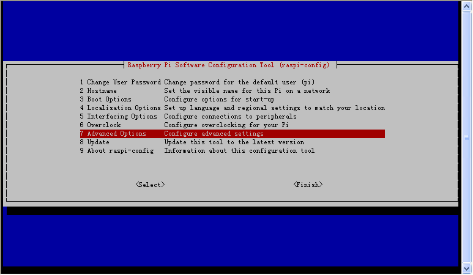

<!doctype html>
<html>
 <head>
    <meta charset="utf-8">
    <meta http-equiv="X-UA-Compatible" content="IE=edge">
    <meta name="viewport" content="width=device-width, initial-scale=1">
    <title>RaspberryPi</title>
    <link rel="stylesheet" href="stylesheet/bootstrap.min.css">
    <link rel="stylesheet" href="stylesheet/bootstrap-theme.min.css">
    <link rel="stylesheet" href="stylesheet/custom.css">
    <!--[if lt IE 9]>
      <script src="javascript/html5shiv.min.js"></script>
      <script src="javascript/respond.min.js"></script>
    <![endif]-->
    <script src="javascript/jquery.min.js"></script>
    <script src="javascript/bootstrap.min.js"></script>
 </head>
 <body>
  <div class="container">
<h1>树莓派配置记录</h1>
官方网站：<a target=_blank href="https://www.raspberrypi.org/">https://www.raspberrypi.org/</a><br />
产品列表：<a target=_blank href="https://www.raspberrypi.org/products/">https://www.raspberrypi.org/products/</a><br />
参考文档：<a target=_blank href="https://www.raspberrypi.org/documentation/">https://www.raspberrypi.org/documentation/</a><br />
官方杂志（月刊）PDF下载：<a target=_blank href="https://www.raspberrypi.org/magpi-issues/">https://www.raspberrypi.org/magpi-issues/</a><br />
官方杂志（月刊）PDF下载：<a target=_blank href="https://hackspace.raspberrypi.org/issues/">https://hackspace.raspberrypi.org/issues/</a><br />
<h2>一、写Raspbian镜像到SD卡</h2>
下载最新版Raspbian或Raspbian Lite：<br />
<!--
<a target=_blank href="https://downloads.raspberrypi.org/raspbian/images/">https://downloads.raspberrypi.org/raspbian/images/</a><br />
<a target=_blank href="https://downloads.raspberrypi.org/raspbian_lite/images/">https://downloads.raspberrypi.org/raspbian_lite/images/</a><br />
-->
<a target=_blank href="http://downloads.raspberrypi.org/raspios_armhf/images/">http://downloads.raspberrypi.org/raspios_armhf/images/</a><br />
<a target=_blank href="http://downloads.raspberrypi.org/raspios_full_armhf/images/">http://downloads.raspberrypi.org/raspios_full_armhf/images/</a><br />
<a target=_blank href="http://downloads.raspberrypi.org/raspios_lite_armhf/images/">http://downloads.raspberrypi.org/raspios_lite_armhf/images/</a><br />
<a target=_blank href="http://downloads.raspberrypi.org/raspios_arm64/images/">http://downloads.raspberrypi.org/raspios_arm64/images/</a><br />
<a target=_blank href="http://downloads.raspberrypi.org/raspios_full_arm64/images/">http://downloads.raspberrypi.org/raspios_full_arm64/images/</a><br />
<a target=_blank href="http://downloads.raspberrypi.org/raspios_lite_arm64/images/">http://downloads.raspberrypi.org/raspios_lite_arm64/images/</a><br />
<a target=_blank href="http://downloads.raspberrypi.org/raspios_oldstable_armhf/images/">http://downloads.raspberrypi.org/raspios_oldstable_armhf/images/</a><br />
<a target=_blank href="http://downloads.raspberrypi.org/raspios_oldstable_lite_armhf/images/">http://downloads.raspberrypi.org/raspios_oldstable_lite_armhf/images/</a><br />
校验SHA1并确认无误：<br />
<pre>[root@localhost ~]# sha1sum /home/cnman/Downloads/2018-04-18-raspbian-stretch-lite.zip
b324cd7f3015e704543e4710ceecfb4881b77664  /home/cnman/Downloads/2018-04-18-raspbian-stretch-lite.zip</pre>
验证签名并确认无误：<br />
<pre>[root@localhost ~]# wget https://www.raspberrypi.org/raspberrypi_downloads.gpg.key
[root@localhost ~]# gpg --import raspberrypi_downloads.gpg.key
gpg: key 5484A525: public key "Serge Schneider <serge@raspberrypi.org>" imported
gpg: key 956F460C: public key "Raspberry Pi Downloads Signing Key" imported
gpg: Total number processed: 2
gpg:               imported: 2  (RSA: 2)
[root@localhost ~]# gpg --verify /home/cnman/Downloads/2018-04-18-raspbian-stretch-lite.zip.sig
gpg: Signature made Wed 18 Apr 2018 08:41:36 PM CST using RSA key ID 956F460C
gpg: Good signature from "Raspberry Pi Downloads Signing Key"
gpg: WARNING: This key is not certified with a trusted signature!
gpg:          There is no indication that the signature belongs to the owner.
Primary key fingerprint: 54C3 DD61 0D9D 1B4A F82A  3775 8738 CD6B 956F 460C</pre>
解压：<br />
<pre>[root@localhost ~]# unzip /home/cnman/Downloads/2018-04-18-raspbian-stretch-lite.zip
Archive:  /home/cnman/Downloads/2018-04-18-raspbian-stretch-lite.zip
  inflating: 2018-04-18-raspbian-stretch-lite.img
[root@localhost ~]# sha1sum 2018-04-18-raspbian-stretch-lite.img
3deee39f9a8a98161b201f0178002eb6e31cc0a4  2018-04-18-raspbian-stretch-lite.img</pre>
插入SD卡，先查看挂载状态：<br />
<pre>[root@localhost ~]# df -h
Filesystem             Size  Used Avail Use% Mounted on
/dev/mapper/rhel-root  104G   22G   82G  21% /
devtmpfs               3.8G     0  3.8G   0% /dev
tmpfs                  3.8G  184K  3.8G   1% /dev/shm
tmpfs                  3.8G  9.9M  3.8G   1% /run
tmpfs                  3.8G     0  3.8G   0% /sys/fs/cgroup
/dev/sda1             1014M  227M  788M  23% /boot
tmpfs                  769M  4.0K  769M   1% /run/user/42
tmpfs                  769M   56K  769M   1% /run/user/1000
/dev/sdb1               42M   21M   21M  51% /run/media/cnman/boot
/dev/sdb2               15G  1.1G   13G   8% /run/media/cnman/673b8ab6-6426-474b-87d3-71bff0fcebc3
tmpfs                  769M     0  769M   0% /run/user/0</pre>
如果已挂载则需要先卸载：<br />
<pre>[root@localhost ~]# umount /dev/sdb1
[root@localhost ~]# umount /dev/sdb2</pre>
用 dd 命令写入img镜像：<br />
<pre>[root@localhost ~]# dd if=2018-04-18-raspbian-stretch-lite.img of=/dev/sdb bs=1M conv=fsync</pre>
注意：没有进度条，请耐心等待完成（7～10分钟）！<br />
写入完成后在boot分区放一个空文件ssh开启远程ssh登录<br />
<pre>[root@localhost ~]# touch /run/media/cnman/boot/ssh</pre>
<br />
2022-04-04起bullseye的新版镜像需要参考<a target=_blank href="https://www.raspberrypi.com/documentation/computers/configuration.html#configuring-a-user">官方文档</a>在boot分区新建userconf.txt，开机自动创建用户：<br />
<pre>nano /run/media/cnman/boot/userconf.txt
pi:$6$zp0l98FTWGcurthL$kDbhCtl17ckj2MmFdnU7jDc6ToifOrjyZ5/3n/izIn1z/b4MxXO6XGMLH8g/uurF5tfNLSV0OeLosWVntAeX30</pre>
示例为用户名pi，密码raspberry<br />
在boot分区新建wpa_supplicant.conf，开机就可以连上WIFI：<br />
<pre>[root@localhost ~]# nano /run/media/cnman/boot/wpa_supplicant.conf</pre>
<pre>country=CN
ctrl_interface=DIR=/var/run/wpa_supplicant GROUP=netdev
update_config=1
network={
    scan_ssid=1
    ssid="Your WIFI SSID"
    psk="Your WIFI Password"
}</pre>
加入MPEG-2和VC-1解码授权（需单独<a target=_blank href="https://www.raspberrypi.org/products/">购买</a>，与CPU序列号绑定）：<br />
<pre>[root@localhost ~]# nano /run/media/cnman/boot/config.txt</pre>
<pre>decode_MPG2=0x4f72f8a4
decode_WVC1=0x8c98ce72</pre>
安全退出SD，插入树莓派通电就可以启动了。<br />
<h2>二、初始配置</h2>
登录路由器管理界面查看树莓派的IP，并用SSH客户端（<a target=_blank href="https://www.chiark.greenend.org.uk/~sgtatham/putty/latest.html">PuTTY</a>、<a target=_blank href="https://www.bitvise.com/download-area">Bitvise SSH Client</a>、<a target=_blank href="https://www.vandyke.com/download/securecrt/download.html">SecureCRT</a>等）登录<br />
初始用户名pi，初始密码raspberry<br />
<br />
<br />
验证MPEG-2和VC-1解码授权（enabled表示已授权，disabled表示未授权）：<br />
<pre>pi@raspberrypi:~ $ sudo vcgencmd codec_enabled MPG2
MPG2=enabled
pi@raspberrypi:~ $ sudo vcgencmd codec_enabled WVC1
WVC1=enabled</pre>
给树莓派设置静态IP：<br />
<pre>pi@raspberrypi:~ $ sudo nano /etc/dhcpcd.conf</pre>
文件最后直接添加：<br />
<pre>interface eth0
static ip_address=192.168.0.100/24
static routers=192.168.0.1
static domain_name_servers=208.67.222.222 208.67.222.220

interface wlan0
static ip_address=192.168.0.101/24
static routers=192.168.0.1
static domain_name_servers=208.67.222.222 208.67.222.220
</pre>
<pre>pi@raspberrypi:~ $ sudo systemctl daemon-reload
pi@raspberrypi:~ $ sudo systemctl restart dhcpcd.service
pi@raspberrypi:~ $ ip -4 address
1: lo: <LOOPBACK,UP,LOWER_UP> mtu 65536 qdisc noqueue state UNKNOWN group default qlen 1000
    inet 127.0.0.1/8 scope host lo
       valid_lft forever preferred_lft forever
2: eth0: <BROADCAST,MULTICAST,UP,LOWER_UP> mtu 1500 qdisc pfifo_fast state UP group default qlen 1000
    inet 192.168.0.100/24 brd 192.168.0.255 scope global eth0
       valid_lft forever preferred_lft forever
3: wlan0: <BROADCAST,MULTICAST,UP,LOWER_UP> mtu 1500 qdisc pfifo_fast state UP group default qlen 1000
    inet 192.168.0.101/24 brd 192.168.0.255 scope global wlan0
       valid_lft forever preferred_lft forever</pre>
扩展磁盘空间并重启：<br />
使用up↑、down↓、left←、right→及Tab键选择，使用Enter键确认<br />
<pre>pi@raspberrypi:~ $ sudo raspi-config</pre>
<br />
<br />
<br />
<br />
添加国内更新源：<br />
<pre>pi@raspberrypi:~ $ sudo nano /etc/apt/sources.list</pre>
<pre>#deb http://raspbian.raspberrypi.org/raspbian/ stretch main contrib non-free rpi
# Uncomment line below then 'apt-get update' to enable 'apt-get source'
#deb-src http://raspbian.raspberrypi.org/raspbian/ stretch main contrib non-free rpi

#deb http://archive.raspberrypi.org/debian/ stretch main ui
# Uncomment line below then 'apt-get update' to enable 'apt-get source'
#deb-src http://archive.raspberrypi.org/debian/ stretch main ui

deb http://mirrors.zju.edu.cn/raspbian/raspbian stretch main contrib non-free firmware rpi
deb http://mirrors.ustc.edu.cn/raspbian/raspbian stretch main contrib non-free firmware rpi
deb http://mirrors.tuna.tsinghua.edu.cn/raspbian/raspbian stretch main contrib non-free firmware rpi</pre>
<pre>pi@raspberrypi:~ $ sudo rm /etc/apt/sources.list.d/raspi.list</pre>
配置APT，强制IPv4，不装那些非必须的包：<br />
<pre>pi@raspberrypi:~ $ sudo nano /etc/apt/apt.conf.d/99force-ipv4</pre>
<pre>Acquire::ForceIPv4 "true";</pre>
<pre>pi@raspberrypi:~ $ sudo nano /etc/apt/apt.conf.d/01norecommend</pre>
<pre>APT::Install-Recommends "0";
APT::Install-Suggests "0";</pre>
<pre>pi@raspberrypi:~ $ sudo nano /etc/apt/apt.conf.d/99notranslations</pre>
<pre>Acquire::Languages "none";</pre>
更新系统：<br />
<pre>pi@raspberrypi:~ $ nano update-and-clean.sh</pre>
<pre>apt-get update -y
apt-get upgrade -y
apt-get autoremove -y
apt-get clean -y
apt-get autoclean -y</pre>
<pre>pi@raspberrypi:~ $ chmod +x update-and-clean.sh
pi@raspberrypi:~ $ sudo ./update-and-clean.sh</pre>
<h2>三、安装配置DNSCrypt Proxy</h2>
安装nano和dig等dns工具：<br />
<pre>pi@raspberrypi:~ $ sudo apt-get install nano dnsutils -y</pre>
安装dnscrypt-proxy：<br />
<pre>pi@raspberrypi:~ $ sudo apt-get install rng-tools -y
pi@raspberrypi:~ $ sudo apt-get install dnscrypt-proxy -y
...
Created symlink /etc/systemd/system/multi-user.target.wants/dnscrypt-proxy-resolvconf.service → /lib/systemd/system/dnscrypt-proxy-resolvconf.service.
Created symlink /etc/systemd/system/sockets.target.wants/dnscrypt-proxy.socket → /lib/systemd/system/dnscrypt-proxy.socket.
Created symlink /etc/systemd/system/multi-user.target.wants/dnscrypt-proxy.service → /lib/systemd/system/dnscrypt-proxy.service.
Job for dnscrypt-proxy.service failed because a timeout was exceeded.
See "systemctl status dnscrypt-proxy.service" and "journalctl -xe" for details.
dnscrypt-proxy.service couldn't start.
...</pre>
没成功启动，不管它，我们不用默认的这些服务，改用从命令行启动：<br />
<pre>pi@raspberrypi:~ $ sudo systemctl stop dnscrypt-proxy.socket
pi@raspberrypi:~ $ sudo systemctl stop dnscrypt-proxy-resolvconf.service
pi@raspberrypi:~ $ sudo systemctl stop dnscrypt-proxy.service
pi@raspberrypi:~ $ sudo systemctl disable dnscrypt-proxy.socket
pi@raspberrypi:~ $ sudo systemctl disable dnscrypt-proxy-resolvconf.service
pi@raspberrypi:~ $ sudo systemctl disable dnscrypt-proxy.service</pre>
Cisco的OpenDNS服务器全部支持DNSCrypt：<br />
<pre>208.67.222.222:53        #resolver1.opendns.com
208.67.222.222:5353        #resolver1.opendns.com
208.67.222.222:443        #resolver1.opendns.com
208.67.220.220:53        #resolver2.opendns.com
208.67.220.220:5353        #resolver2.opendns.com
208.67.220.220:443        #resolver2.opendns.com
208.67.222.220:53        #resolver3.opendns.com
208.67.220.222:53        #resolver4.opendns.com
2620:0:ccc::2            #resolver1.ipv6-sandbox.opendns.com
2620:0:ccd::2            #resolver2.ipv6-sandbox.opendns.com
208.67.222.123:53        #resolver1-fs.opendns.com(有过滤)
208.67.222.123:443        #resolver1-fs.opendns.com(有过滤)
208.67.220.123:53        #resolver2-fs.opendns.com(有过滤)
208.67.220.123:443        #resolver2-fs.opendns.com(有过滤)
</pre>
<pre>pi@raspberrypi:~ $ sudo nano /lib/systemd/system/dnscrypt-proxy-cl-resolver2-443.service</pre>
<pre>[Unit]
Description=DNSCrypt client proxy - Command Line 208.67.220.220:443
Documentation=man:dnscrypt-proxy(8)
After=network.target
Before=nss-lookup.target

[Install]
WantedBy=multi-user.target

[Service]
Type=notify
NonBlocking=true
ExecStart=/usr/sbin/dnscrypt-proxy --local-address=127.0.0.1:9995 --resolver-name=cisco --provider-name=2.dnscrypt-cert.opendns.com --provider-key=B735:1140:206F:225D:3E2B:D822:D7FD:691E:A1C3:3CC8:D666:8D0C:BE04:BFAB:CA43:FB79 --resolver-address=208.67.220.220:443 --max-active-requests=65535 --tcp-only
Restart=always
ProtectSystem=strict
ProtectHome=true
ProtectKernelModules=true
ProtectKernelTunables=true
ProtectControlGroups=true
MemoryDenyWriteExecute=true
RestrictRealtime=true</pre>
按上面格式创建8个分别监听在9991～9998端口给unbound用，以达到“东方不亮西方亮”的效果：<br />

<pre>pi@raspberrypi:~ $ sudo systemctl daemon-reload
pi@raspberrypi:~ $ sudo systemctl enable dnscrypt-proxy-cl-resolver1-53.service
pi@raspberrypi:~ $ sudo systemctl enable dnscrypt-proxy-cl-resolver1-443.service 
pi@raspberrypi:~ $ sudo systemctl enable dnscrypt-proxy-cl-resolver1-5353.service 
pi@raspberrypi:~ $ sudo systemctl enable dnscrypt-proxy-cl-resolver2-53.service   
pi@raspberrypi:~ $ sudo systemctl enable dnscrypt-proxy-cl-resolver2-443.service  
pi@raspberrypi:~ $ sudo systemctl enable dnscrypt-proxy-cl-resolver2-5353.service  
pi@raspberrypi:~ $ sudo systemctl enable dnscrypt-proxy-cl-resolver3-53.service
pi@raspberrypi:~ $ sudo systemctl enable dnscrypt-proxy-cl-resolver4-53.service
pi@raspberrypi:~ $ sudo systemctl start dnscrypt-proxy-cl-resolver1-53.service
pi@raspberrypi:~ $ sudo systemctl start dnscrypt-proxy-cl-resolver1-443.service 
pi@raspberrypi:~ $ sudo systemctl start dnscrypt-proxy-cl-resolver1-5353.service 
pi@raspberrypi:~ $ sudo systemctl start dnscrypt-proxy-cl-resolver2-53.service   
pi@raspberrypi:~ $ sudo systemctl start dnscrypt-proxy-cl-resolver2-443.service  
pi@raspberrypi:~ $ sudo systemctl start dnscrypt-proxy-cl-resolver2-5353.service  
pi@raspberrypi:~ $ sudo systemctl start dnscrypt-proxy-cl-resolver3-53.service
pi@raspberrypi:~ $ sudo systemctl start dnscrypt-proxy-cl-resolver4-53.service
pi@raspberrypi:~ $ sudo netstat -tulpn | grep dnscrypt-proxy                   
tcp        0      0 127.0.0.1:9991          0.0.0.0:*               LISTEN      1057/dnscrypt-proxy 
tcp        0      0 127.0.0.1:9992          0.0.0.0:*               LISTEN      1068/dnscrypt-proxy 
tcp        0      0 127.0.0.1:9993          0.0.0.0:*               LISTEN      1078/dnscrypt-proxy 
tcp        0      0 127.0.0.1:9994          0.0.0.0:*               LISTEN      1088/dnscrypt-proxy 
tcp        0      0 127.0.0.1:9995          0.0.0.0:*               LISTEN      1098/dnscrypt-proxy 
tcp        0      0 127.0.0.1:9996          0.0.0.0:*               LISTEN      1108/dnscrypt-proxy 
tcp        0      0 127.0.0.1:9997          0.0.0.0:*               LISTEN      1118/dnscrypt-proxy 
tcp        0      0 127.0.0.1:9998          0.0.0.0:*               LISTEN      1128/dnscrypt-proxy 
udp        0      0 127.0.0.1:9991          0.0.0.0:*                           1057/dnscrypt-proxy 
udp        0      0 127.0.0.1:9992          0.0.0.0:*                           1068/dnscrypt-proxy 
udp        0      0 127.0.0.1:9993          0.0.0.0:*                           1078/dnscrypt-proxy 
udp        0      0 127.0.0.1:9994          0.0.0.0:*                           1088/dnscrypt-proxy 
udp        0      0 127.0.0.1:9995          0.0.0.0:*                           1098/dnscrypt-proxy 
udp        0      0 127.0.0.1:9996          0.0.0.0:*                           1108/dnscrypt-proxy 
udp        0      0 127.0.0.1:9997          0.0.0.0:*                           1118/dnscrypt-proxy 
udp        0      0 127.0.0.1:9998          0.0.0.0:*                           1128/dnscrypt-proxy</pre>
<h2>四、安装配置Unbound</h2>
DNSCrypt Proxy v1.x没有缓存功能，因此才需要安装Unbound<br />
<pre>pi@raspberrypi:~ $ sudo apt-get install unbound -y</pre>
<pre>pi@raspberrypi:~ $ sudo nano /etc/unbound/unbound.conf</pre>
<pre># Unbound configuration file for Debian.
#
# See the unbound.conf(5) man page.
#
# See /usr/share/doc/unbound/examples/unbound.conf for a commented
# reference config file.
#
# The following line includes additional configuration files from the
# /etc/unbound/unbound.conf.d directory.
#include: "/etc/unbound/unbound.conf.d/*.conf"

server:
    # Send minimum amount of information to upstream servers to enhance
    # privacy. Only sends minimum required labels of the QNAME and sets
    # QTYPE to NS when possible.

    # See RFC 7816 "DNS Query Name Minimisation to Improve Privacy" for
    # details.

#    qname-minimisation: yes

    # The following line will configure unbound to perform cryptographic
    # DNSSEC validation using the root trust anchor.
#    auto-trust-anchor-file: "/var/lib/unbound/root.key"

    logfile: "/var/log/unbound.log"
    use-syslog: no
    log-time-ascii: yes
    log-queries: yes
    verbosity: 1
    interface: 0.0.0.0
#    interface: ::0
#    interface-automatic: yes
    port: 53
    statistics-interval: 3600
    statistics-cumulative: yes
    extended-statistics: yes
    do-not-query-localhost: no
    prefetch: yes
    do-ip4: yes
#    do-ip6: yes
    do-udp: yes
    do-tcp: yes
#    tcp-upstream: yes
    root-hints: "/etc/unbound/named.cache"
    hide-identity: yes
    hide-version: yes
    cache-min-ttl: 1800
    access-control: 0.0.0.0/0 allow
#    access-control: ::0/0 allow

include: "/etc/unbound/unbound.blacklist.ips.conf"
include: "/etc/unbound/unbound.local-zone.blacklist.domains.conf"
#include: "/etc/unbound/unbound.local-zone.hosts.conf"
include: "/etc/unbound/unbound.forward-zone.China.conf"

forward-zone:
    name: "."
    forward-addr: 127.0.0.1@9991
    forward-addr: 127.0.0.1@9992
    forward-addr: 127.0.0.1@9993
    forward-addr: 127.0.0.1@9994
    forward-addr: 127.0.0.1@9995
    forward-addr: 127.0.0.1@9996
    forward-addr: 127.0.0.1@9997
    forward-addr: 127.0.0.1@9998
remote-control:
    control-enable: yes
    control-use-cert: yes
    control-interface: 127.0.0.1
#    control-interface: ::1
    control-port: 8953
    control-key-file: "/etc/unbound/unbound_control.key"
    control-cert-file: "/etc/unbound/unbound_control.pem"
    server-key-file: "/etc/unbound/unbound_server.key"
    server-cert-file: "/etc/unbound/unbound_server.pem"</pre>
<pre>pi@raspberrypi:~ $ sudo rm /etc/unbound/unbound.conf.d/qname-minimisation.conf
pi@raspberrypi:~ $ sudo rm /etc/unbound/unbound.conf.d/root-auto-trust-anchor-file.conf
pi@raspberrypi:~ $ sudo touch /var/log/unbound.log
pi@raspberrypi:~ $ sudo chmod 666 /var/log/unbound.log</pre>
<pre>pi@raspberrypi:~ $ sudo wget -N https://github.com/CNMan/unbound.conf/raw/master/unbound/unbound.blacklist.ips.conf --directory-prefix=/etc/unbound
pi@raspberrypi:~ $ sudo wget -N https://github.com/CNMan/unbound.conf/raw/master/unbound/unbound.forward-zone.China.conf --directory-prefix=/etc/unbound
pi@raspberrypi:~ $ sudo wget -N https://github.com/CNMan/unbound.conf/raw/master/unbound/unbound.local-zone.blacklist.domains.conf --directory-prefix=/etc/unbound
pi@raspberrypi:~ $ sudo wget -N https://github.com/CNMan/unbound.conf/raw/master/unbound/unbound.local-zone.hosts.conf --directory-prefix=/etc/unbound
pi@raspberrypi:~ $ sudo wget -N https://www.internic.net/domain/named.cache --directory-prefix=/etc/unbound</pre>
<pre>pi@raspberrypi:~ $ sudo systemctl restart unbound.service</pre>
<pre>pi@raspberrypi:~ $ sudo netstat -tulpn | grep unbound    
tcp        0      0 0.0.0.0:53              0.0.0.0:*               LISTEN      885/unbound         
tcp        0      0 127.0.0.1:8953          0.0.0.0:*               LISTEN      885/unbound         
udp        0      0 0.0.0.0:53              0.0.0.0:*                           885/unbound
pi@raspberrypi:~ $ cat /etc/resolv.conf
# Generated by resolvconf
nameserver 127.0.0.1</pre>
<pre>pi@raspberrypi:~ $ sudo reboot</pre>
重启系统，发现一切都正常：<br />
<pre>pi@raspberrypi:~ $ sudo netstat -tulpn | grep dnscrypt-proxy
tcp        0      0 127.0.0.1:9991          0.0.0.0:*               LISTEN      411/dnscrypt-proxy  
tcp        0      0 127.0.0.1:9992          0.0.0.0:*               LISTEN      403/dnscrypt-proxy  
tcp        0      0 127.0.0.1:9993          0.0.0.0:*               LISTEN      405/dnscrypt-proxy  
tcp        0      0 127.0.0.1:9994          0.0.0.0:*               LISTEN      408/dnscrypt-proxy  
tcp        0      0 127.0.0.1:9995          0.0.0.0:*               LISTEN      417/dnscrypt-proxy  
tcp        0      0 127.0.0.1:9996          0.0.0.0:*               LISTEN      402/dnscrypt-proxy  
tcp        0      0 127.0.0.1:9997          0.0.0.0:*               LISTEN      415/dnscrypt-proxy  
tcp        0      0 127.0.0.1:9998          0.0.0.0:*               LISTEN      413/dnscrypt-proxy  
udp        0      0 127.0.0.1:9991          0.0.0.0:*                           411/dnscrypt-proxy  
udp        0      0 127.0.0.1:9992          0.0.0.0:*                           403/dnscrypt-proxy  
udp        0      0 127.0.0.1:9993          0.0.0.0:*                           405/dnscrypt-proxy  
udp        0      0 127.0.0.1:9994          0.0.0.0:*                           408/dnscrypt-proxy  
udp        0      0 127.0.0.1:9995          0.0.0.0:*                           417/dnscrypt-proxy  
udp        0      0 127.0.0.1:9996          0.0.0.0:*                           402/dnscrypt-proxy  
udp        0      0 127.0.0.1:9997          0.0.0.0:*                           415/dnscrypt-proxy  
udp        0      0 127.0.0.1:9998          0.0.0.0:*                           413/dnscrypt-proxy
pi@raspberrypi:~ $ sudo netstat -tulpn | grep unbound
tcp        0      0 0.0.0.0:53              0.0.0.0:*               LISTEN      460/unbound         
tcp        0      0 127.0.0.1:8953          0.0.0.0:*               LISTEN      460/unbound         
udp        0      0 0.0.0.0:53              0.0.0.0:*                           460/unbound
pi@raspberrypi:~ $ cat /etc/resolv.conf
# Generated by resolvconf
nameserver 127.0.0.1</pre>
<h2>五、Socks5代理</h2>
SSH Tunnel Proxy 开机自动启动：<br />
安装sshpass，用于自动加载密码：<br />
<pre>pi@raspberrypi:~ $ sudo apt-get install sshpass -y</pre>
把密码写在文件sshpassus里：<br />
<pre>pi@raspberrypi:~ $ sudo nano sshpassus</pre>
<pre>usvpspassword</pre>
防掉线设置：<br />
<pre>pi@raspberrypi:~ $ sudo nano sshconfig</pre>
<pre>ServerAliveInterval 120
ServerAliveCountMax 3</pre>
创建并启用开机启动脚本：<br />
<pre>pi@raspberrypi:~ $ sudo nano /lib/systemd/system/sshtunnelproxy-us.service</pre>
<pre>[Unit]
Description = SSH Tunnel Proxy - US
Wants = network-online.target
After = network.target network-online.target

[Service]
Type = oneshot
ExecStart = /usr/bin/sshpass -f /home/pi/sshpassus /usr/bin/ssh -F /home/pi/sshconfig -p 22 -N -D 0.0.0.0:1080 usvpsuser@usvpsip

[Install]
WantedBy = multi-user.target</pre>
<pre>pi@raspberrypi:~ $ sudo systemctl daemon-reload
pi@raspberrypi:~ $ sudo systemctl enable sshtunnelproxy-us.service
pi@raspberrypi:~ $ sudo systemctl start sshtunnelproxy-us.service</pre>
照猫画虎，可以创建sshtunnelproxy-tw、sshtunnelproxy-hk等，监听在不同端口即可。这样就可以给下面的polipo转为http代理了。当然很多程序现在都可以直接用socks5代理了（firefox、Chrome、Telegram都支持）<br />
<h2>六、HTTP(S)代理</h2>
有些程序不支持socks5代理，我们安装Polipo来将socks5代理转为http代理：<br />
<pre>pi@raspberrypi:~ $ sudo apt-get install polipo -y</pre>
没如前文配置APT的话，会附带安装dnsmasq，没啥用，直接禁用掉：<br />
<pre>pi@raspberrypi:~ $ sudo systemctl disable dnsmasq.service</pre>
修改polipo配置：<br />
<pre>pi@raspberrypi:~ $ sudo nano /etc/polipo/config</pre>
<pre>logSyslog = true
logFile = /var/log/polipo/polipo.log
proxyAddress = 0.0.0.0
socksParentProxy = 127.0.0.1:1080
socksProxyType = socks5
allowedPorts = 1-65535
tunnelAllowedPorts = 1-65535</pre>
<pre>pi@raspberrypi:~ $ sudo systemctl restart polipo.service
pi@raspberrypi:~ $ sudo netstat -tulpn | grep polipo
tcp        0      0 0.0.0.0:8123            0.0.0.0:*               LISTEN      356/polipo</pre>
这样就有一个监听在8123端口的http代理了。<br />
<h2>七、其他杂项</h2>
参考<a target=_blank href="https://cnman.github.io/?p=371">https://cnman.github.io/?p=371</a>和<a target=_blank href="https://elinux.org/RPi_HardwareHistory">https://elinux.org/RPi_HardwareHistory</a>，查看CPU型号，判断树莓派产地及生产商：<br />
<pre>pi@raspberrypi:~ $ sudo cat /proc/cpuinfo
processor       : 0
model name      : ARMv7 Processor rev 5 (v7l)
BogoMIPS        : 38.40
Features        : half thumb fastmult vfp edsp neon vfpv3 tls vfpv4 idiva idivt vfpd32 lpae evtstrm 
CPU implementer : 0x41
CPU architecture: 7
CPU variant     : 0x0
CPU part        : 0xc07
CPU revision    : 5

processor       : 1
model name      : ARMv7 Processor rev 5 (v7l)
BogoMIPS        : 38.40
Features        : half thumb fastmult vfp edsp neon vfpv3 tls vfpv4 idiva idivt vfpd32 lpae evtstrm 
CPU implementer : 0x41
CPU architecture: 7
CPU variant     : 0x0
CPU part        : 0xc07
CPU revision    : 5

processor       : 2
model name      : ARMv7 Processor rev 5 (v7l)
BogoMIPS        : 38.40
Features        : half thumb fastmult vfp edsp neon vfpv3 tls vfpv4 idiva idivt vfpd32 lpae evtstrm 
CPU implementer : 0x41
CPU architecture: 7
CPU variant     : 0x0
CPU part        : 0xc07
CPU revision    : 5

processor       : 3
model name      : ARMv7 Processor rev 5 (v7l)
BogoMIPS        : 38.40
Features        : half thumb fastmult vfp edsp neon vfpv3 tls vfpv4 idiva idivt vfpd32 lpae evtstrm 
CPU implementer : 0x41
CPU architecture: 7
CPU variant     : 0x0
CPU part        : 0xc07
CPU revision    : 5

Hardware        : BCM2835
Revision        : a01041
Serial          : 000000003a914691</pre>
注意：4.9以上内核所有Pi的Hardware都显示BCM2835，不能准确区分为BCM2835、BCM2836、BCM2837，可用下面命令查看Pi版本：<br />
<pre>pi@raspberrypi:~ $ cat /proc/device-tree/model
Raspberry Pi 2 Model B Rev 1.1</pre>
  </div>
 </body>
</html>
